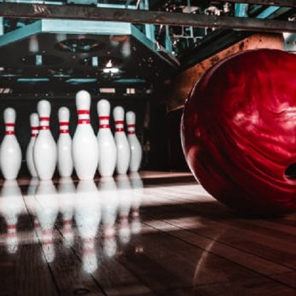
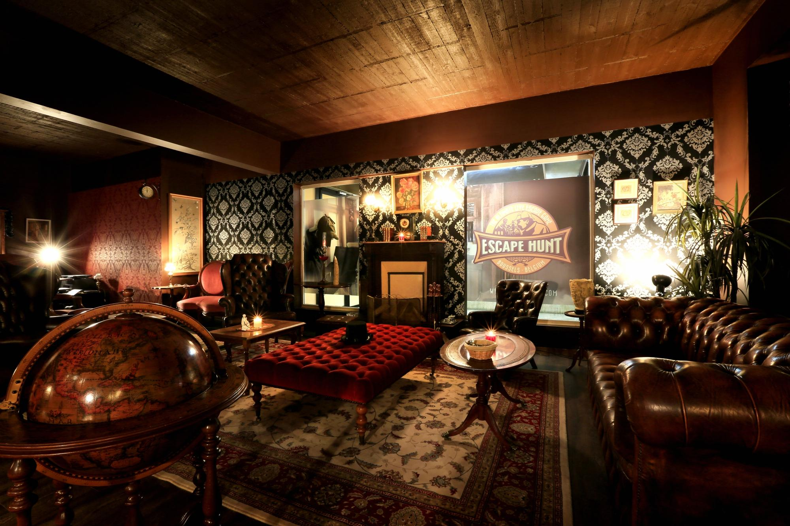
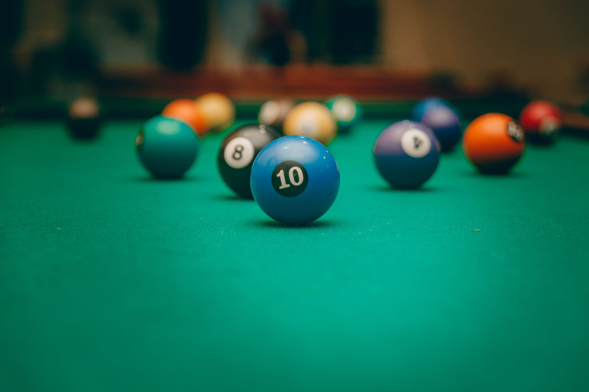

Avondje met vrienden
Leuven zou Leuven niet zijn zonder alle leuke momenten die je er kan doorbrengen met vrienden. Zo is lekker iets gaan drinken, of gezellig een filmavondje houden op kot altijd leuk, maar soms mag het eens wat meer zijn!
-
Iets wat altijd mega leuk is, en zeker niet zo duur hoeft te zijn, is bowlen. Zo kan je al voor €3,50 je vrienden uitdagen op een bowl-duel in Bowling Leuven. Als je tijdens het bowlen ook iets drinkt, hoef je zelfs niet meer te betalen voor de huur van je schoenen. Win-win! Ook bij Bowl Kings kan je al vanaf €3 gaan bowlen.
 -
Hou je van een uitdaging en wil je wel eens zien hoe goed jij en je vrienden samenwerken, dan kan je eens een escape room uittesten! Je krijgt 60 minuten de tijd om uit een kamer te ontsnappen. Bij Exit Room Leuven hebben ze 7 verschillende themakamers waar je uit kan kiezen, de prijzen variëren tussen de €20 en €30 p.p. afhankelijk van het aantal spelers. Ze bieden ook combodeals aan waarbij je een escape room kan combineren met bijvoorbeeld een lekker etentje of een leuke stadswandeling met proevertjes. Ook Escaperoom Leuven biedt 4 geweldige themakamers aan waaruit je moet proberen te ontsnappen. De prijzen variëren hier tussen de €20 en €26 p.p. afhankelijk van het aantal spelers.
 -
Ga je liever een middagje of avondje poolen of snookeren met vrienden? Dan kan je terecht in de Downtown Jack. Je betaalt hier €6 per uur voor het huren van een pooltafel. Je kan naast poolen en snookeren ook sportwedstrijden zien, tafelvoetbal spelen, een partijtje darts spelen en nog zoveel meer. Ga er zeker eens langs en daag je vrienden uit!
 -
Wil je graag een film zien, maar eens wat anders dan de movie nights op kot? Dan kan je terecht bij Kinepolis. Zij spelen altijd de nieuwste films en je kan er ook een studentenkaart aanvragen, daar krijg je 25% korting mee op je filmticket en op je aankopen in de shop. Ook kan je terecht bij de “pure cinema”, zo omschrijft Cinema Zed zichzelf. Hier worden recente films gespeeld, maar ook oudere klassiekers worden hier geregeld terug bovengehaald. Ook hier kan je een studentenkaart aanvragen en dan betaal je €8 voor je ticket.